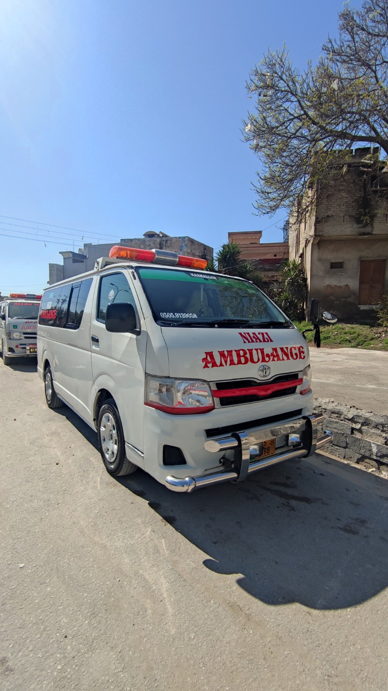
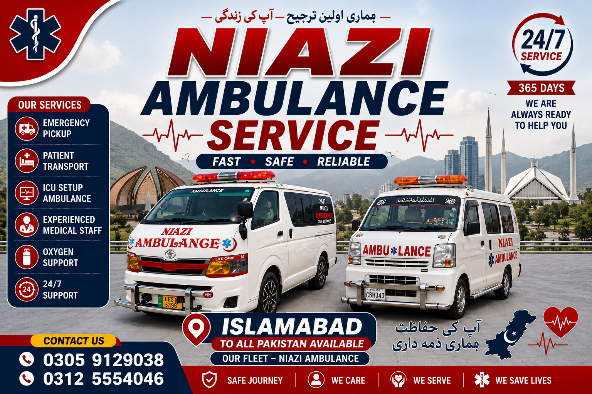
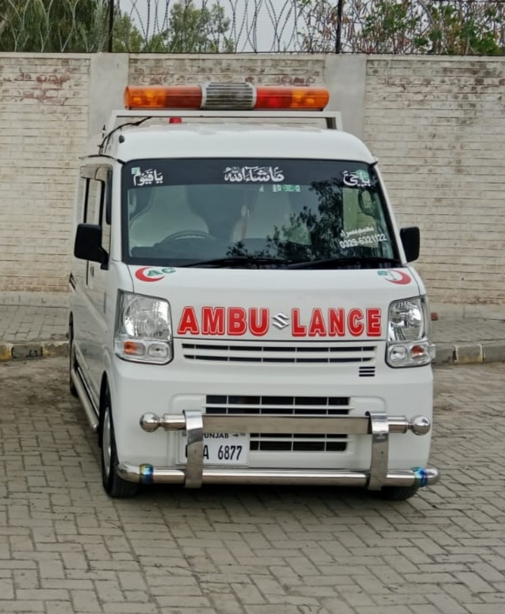
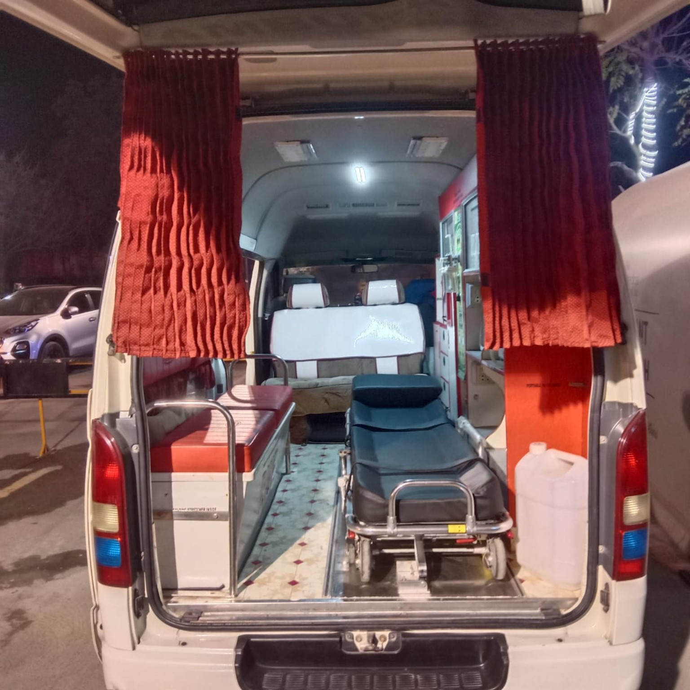
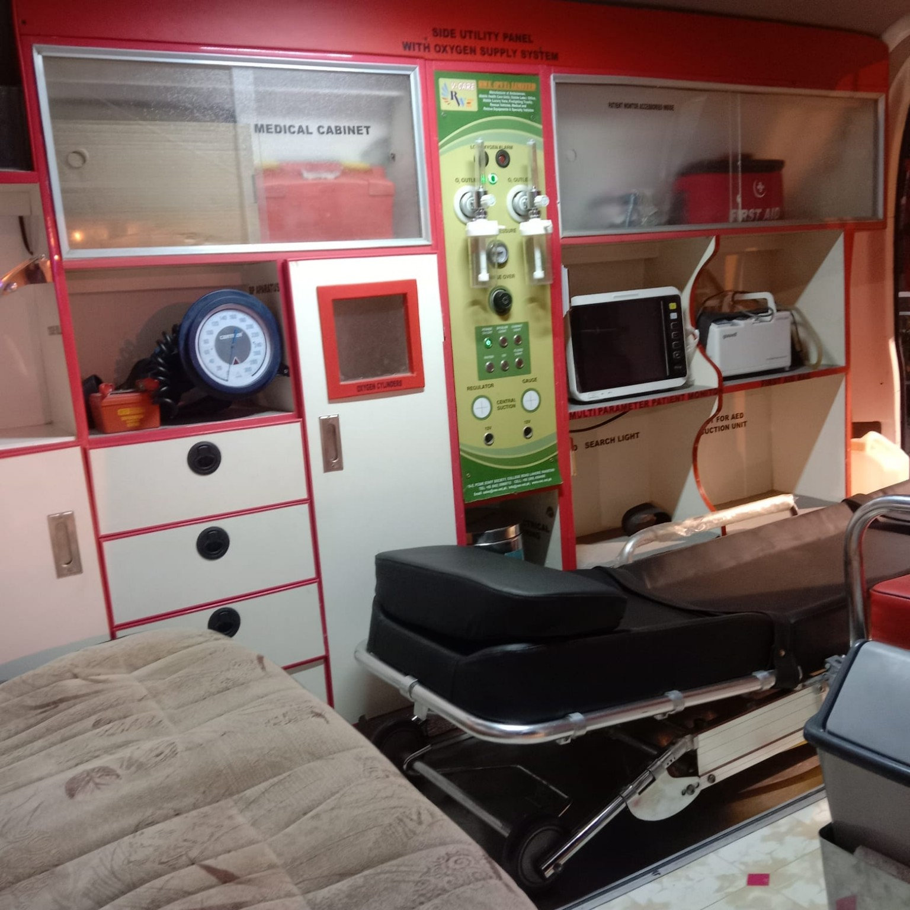
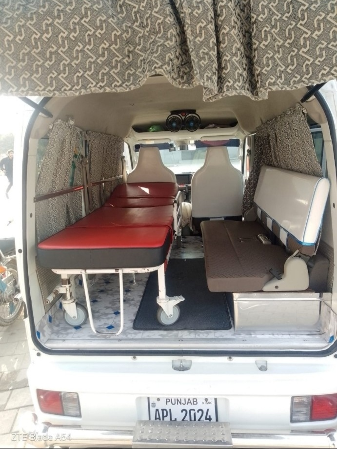
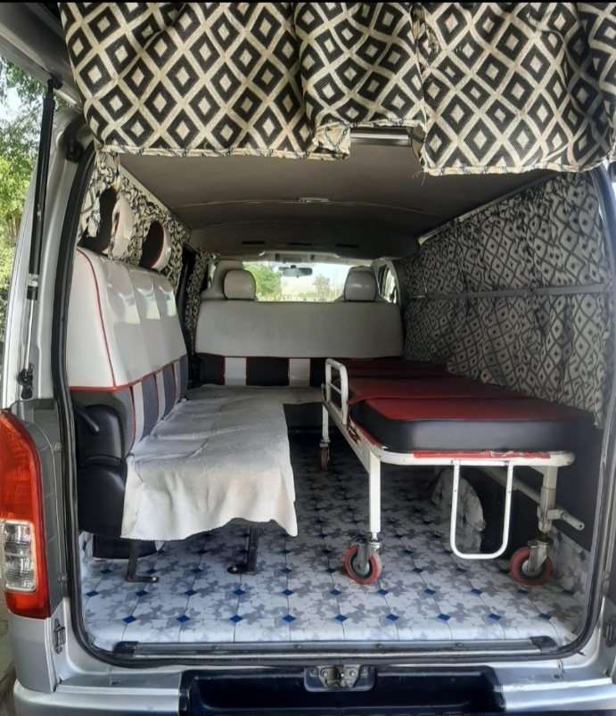

Fast, safe and reliable patient transport, hospital transfer, oxygen-support and intercity ambulance service from Islamabad to destinations across Pakistan.
🚑 Call for Ambulance💬 Book Ambulance on WhatsAppAmbulances available on call in Islamabad. No physical Islamabad office address is claimed.

Local and long-distance patient transportation with vehicle options selected according to patient and journey requirements.
Ambulance availability on call for urgent patient transportation.
Home-to-hospital and hospital-to-hospital transfers.
Equipped ambulance options with oxygen support where required and available.
Medical-support equipment for suitable patient transfers, subject to confirmation.
Islamabad to cities across Pakistan.
Respectful intercity transportation service.

Original photographs of our large and compact ambulance options.

Actual interior and equipment photographs. Required equipment and staffing should be confirmed when booking.




Available on call across major sectors and surrounding localities.
Searching for an ambulance near me in Islamabad? Niazi Ambulance Service can be contacted 24/7 for ambulance availability across Islamabad sectors, residential areas, hospital zones and surrounding localities. Share your exact pickup point, destination and patient requirements for dispatch confirmation.
On-call coverage across F, G, H and I sectors plus E-11, D-12 and nearby localities.
Pickup and patient-transfer requests can be arranged to or from hospitals and healthcare facilities across Islamabad.
Intercity ambulance journeys from Islamabad to Rawalpindi, Punjab, Khyber Pakhtunkhwa and destinations across Pakistan.
Intercity patient transportation can be arranged from Islamabad to Rawalpindi, Lahore, Mianwali, Sargodha, Faisalabad, Peshawar and other destinations across Pakistan.
Share your pickup location, destination and patient-transfer requirements.
📞 0305-9129038